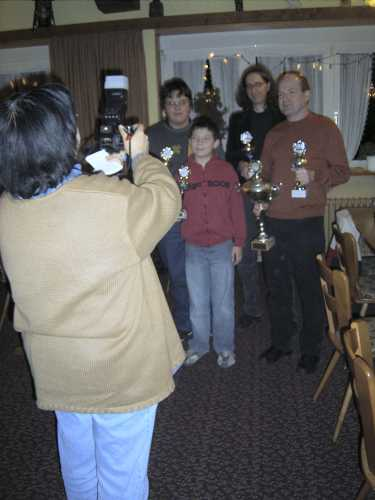
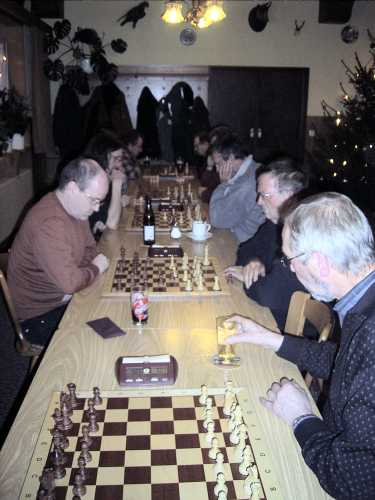

18.12.07
Ehrungen Sommerpokal
und
Nikolausblitzturnier

Die Teilnehmer trudeln ein...

Die Presse in Gestalt von Frau Fröse macht
ein Bild

Die ersten zwei Plätze des Sommerpokalturniers:
Bernhard Bürgin, der den Wanderpokal nach 3-maligem Sieg dauerhaft
mit nach Hause nimmt, und Stefan Frommherz (der drittplazierte Thomas
Schmidt fehlte leider).
Jochen und Daniel Bahner präsentieren stolz ihre Pokale des Bodensee-Schwarzwald-Hochrhrein
Jugendgrandprix, bei dem sie nach der Gesamtwertung jeweils den 3. Platz in
der U14 bzw. U12 belegten.

Das Nikolausblitzturnier beginnt.

Bei hervorragender Bewirtung wurde hart gekämpft.

Es waren drei Entscheidungsspiele um Platz 2 nötig...

Zu guter letzt gewann Stefan Frommherz (mitte) das Turnier
vor Bernhard Bürgin (rechts) und Roland Bahner (links).